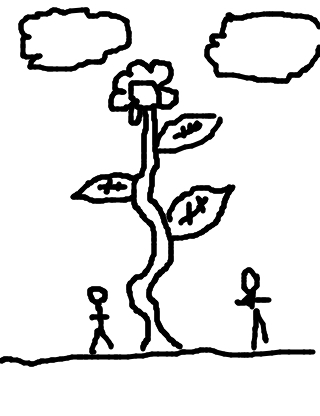

so rickyc drew...
so matt wrote...
"We might have overdone it on the Miracle-Gro", Janet said to her husband.
so tasia drew...
so irondavy wrote...
Super Mario didn't do his job.
so jackcheng drew...
so mike wrote...
Mario is actually a real plumber.
so jason drew...